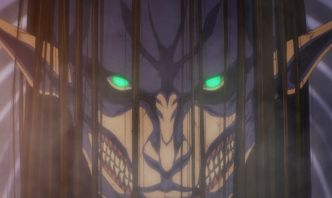
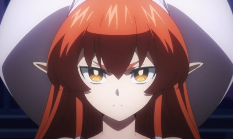
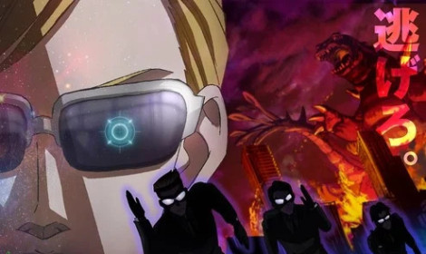

|
Câu Chuyện Trong Trò Chơi Nhập Vai Trực Tuyến - Toaru Ossan no VRMMO Katsudoki
TIN TỨC ANIME 17 giờ trước
Taichi Tanaka (38 tuổi, độc thân) có một công việc văn phòng bình thường và thích chơi game mỗi khi rảnh rỗi. Trong một thế giới nơi người chơi được tự do làm theo ý |
|  |
Attack on Titan tiếp tục gây choáng khi trong "phần 3 mùa cuối cùng" lại có thêm "phần 1" kéo dài 1 giờ!
TIN TỨC ANIME 17 giờ trước
Theo thông báo của NHK, hồi đầu tiên trong phần 3 mùa cuối cùng của Attack on Titan sẽ kéo dài lên đến một giờ đồng hồ vào ngày 3 tháng 3 năm 2023 sắp tới. Đây có lẽ |
|  |
Helck - Con Người Trở Thành Chúa Quỷ?
TIN TỨC ANIME 17 giờ trước
Đã ba tháng trôi qua kể từ khi Chúa Quỷ bị hạ gục, và Vương quốc Quỷ đang tổ chức một giải đấu để chọn người thay thế hắn. Thí sinh dẫn đầu là Helck, một anh |
|  |
Anime Tosochu hé lộ dàn diễn viên chính, công bố thời gian lên sóng chính thức
TIN TỨC ANIME 17 giờ trước
Chương trình được phát sóng không thường xuyên trên Fuji TV kể từ năm 2004. Các thí sinh tham gia sẽ cố gắng sống sót trong công viên giải trí, trung tâm mua sắm và |